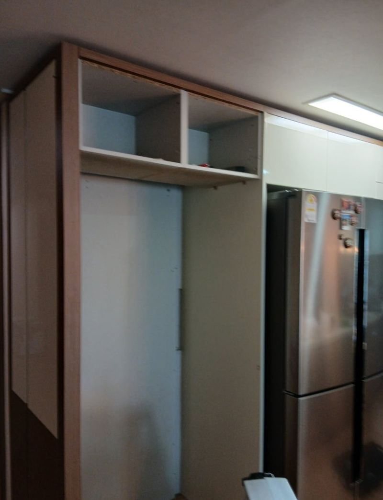
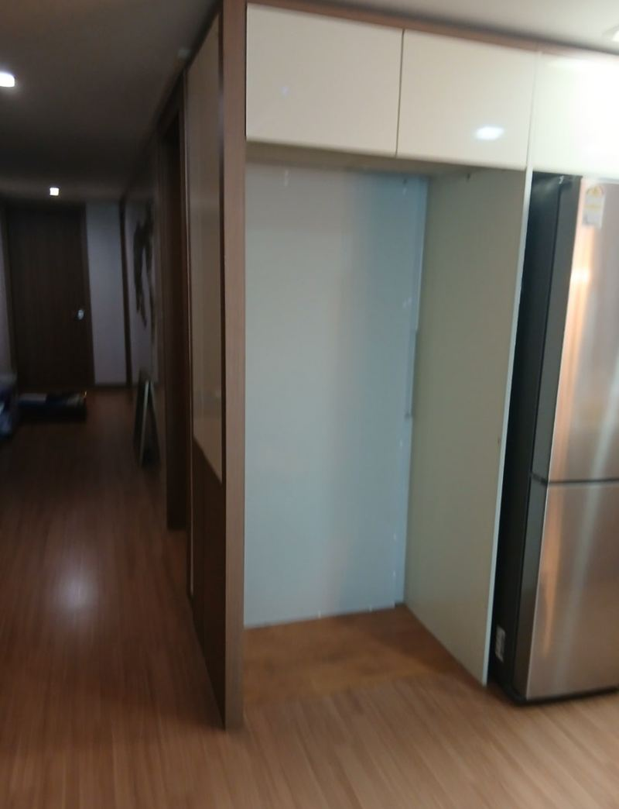
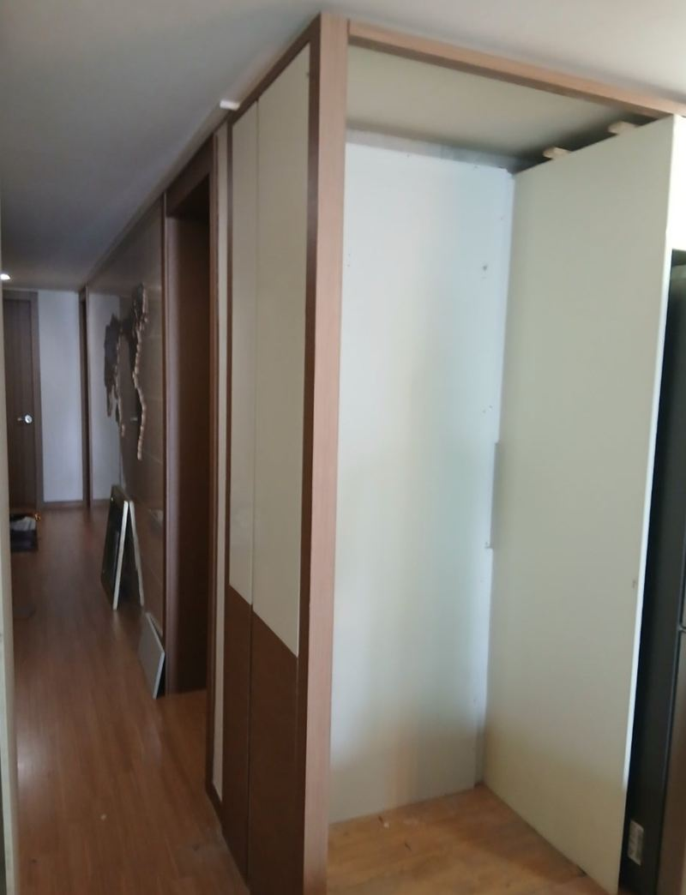
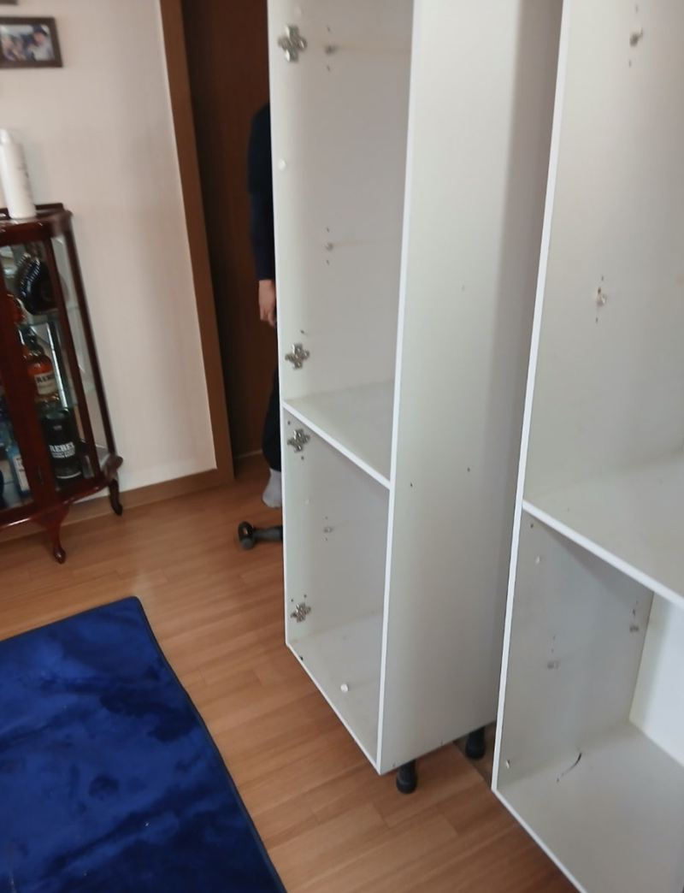
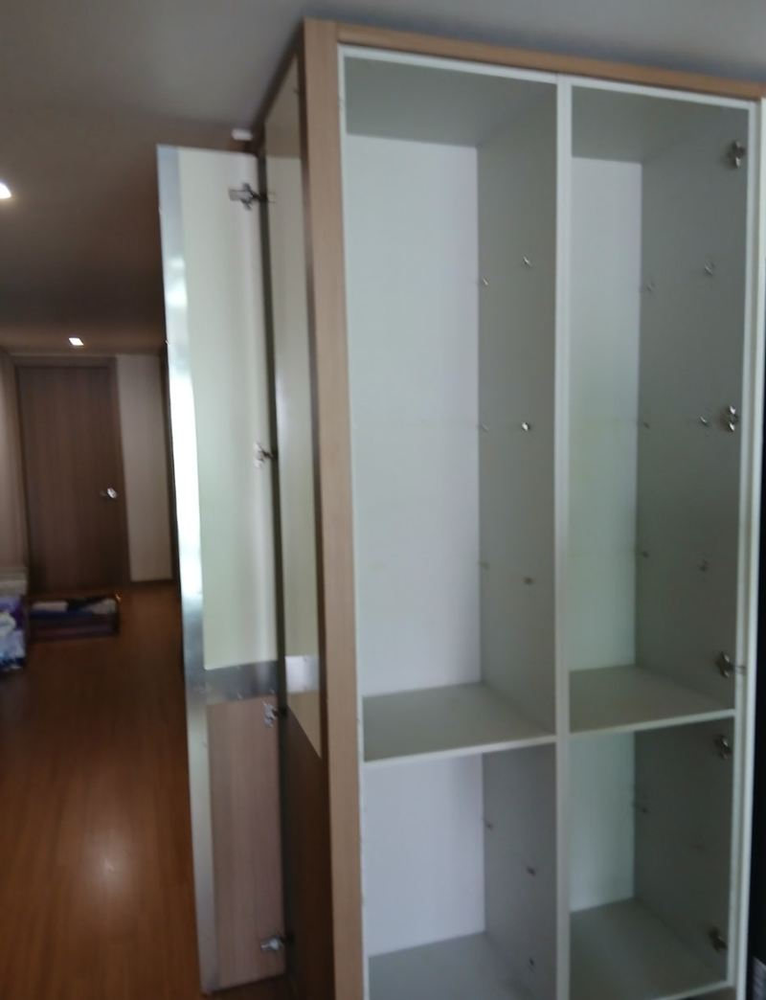
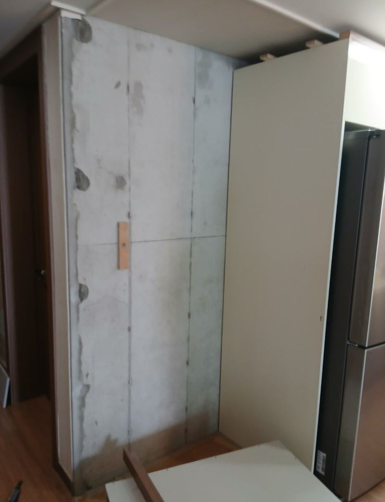
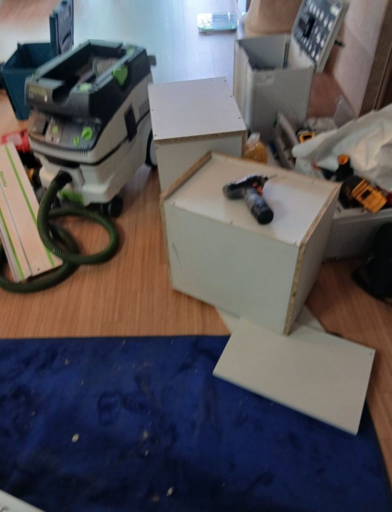

마포 냉장고장 내부 확장 리폼 방법과 순서


리폼 전리폼 후← 밀어서 전후 비교 →
"냉장고가 커서 안 들어가요. 위 수납장은 살리면서 넓힐 수 있을까요?" 마포 아파트에서 3도어 냉장고를 미리 사 두신 고객분이었어요. 간단한 리폼이면 될 줄 아셨는데, 열어 보니 냉장고장이 뒤쪽 수납공간까지 깊게 이어져 있었고, 옆 상부장은 벽에 붙지 않고 양옆 나무 지지대에만 걸려 떠 있었어요. 일단 전체를 해체하고 벽에 지지 목재를 새로 고정한 뒤, 쓸 만한 상부장은 잘라 다시 쓰면서 냉장고 자리를 넓혀 다시 짰어요.
| 현장 | 서울 마포구 아파트 주방 냉장고장 |
|---|---|
| 요청 | 새 3도어 냉장고 자리 확보, 상부장은 최대한 유지 |
| 한 일 | 구조 진단 → 전체 해체 → 벽면 지지 목재 고정(돌본드) → 상부장 필요한 부분만 절단·재사용 → 원목 지지대 설치 → ㄱ자 보강대 → 정리 청소 |
| 판단 | 단순 절단 리폼으로는 안전하지 않아 다시 짜는 방식으로 변경 |
그냥 잘라 넓히면 안 되는 이유
냉장고장 폭이 모자라면 옆판을 잘라 내면 될 것 같지만, 그 판이 무엇을 받치고 있는지가 먼저예요. 이 집은 냉장고가 들어갈 오른쪽이 벽과 떨어져 있어 무게를 받을 데가 없었고, 위쪽 상판도 한 번 더 덧대어져 있었어요. 여기서 판만 잘라 내면 상부장이 처지거나 흔들려요.


냉장고장 확장 리폼 순서
전체 해체
뒤쪽 수납까지 이어진 구조라 부분만 손댈 수 없었어요. 가구를 모두 해체해 안쪽 구조를 드러냈어요.


벽에 지지 목재 고정
안쪽까지 뻗은 목재를 벽체에 붙일 수 있게 돌본드로 지지대를 세웠어요. 기존 목재 중 튼튼한 것은 다시 다듬어 썼어요.

상부장 재사용과 원목 지지대
상태 좋은 상부장은 필요한 만큼만 잘라 다시 걸고, 냉장고 자리 양옆 벽에는 맞춤 원목 지지대를 달아 무게를 나눴어요.
ㄱ자 보강대와 정리
상부장이 처지지 않게 안쪽에 ㄱ자 보강대를 더했어요. 남은 목재를 수거하고 상부장 안과 주방을 청소해 바로 쓸 수 있게 했어요.

무거운 그릇이나 가전은 아래 칸에 두시라고 함께 안내했어요. 고객분은 "안 될 줄 알았는데 따로 짜 주니 좋다, 리폼은 별로라던 남편도 결과를 보고 더 마음에 든다고 했다"며 웃으셨어요.
리폼 전에 꼭 보는 구조
| 확인할 것 | 왜 중요한지 |
|---|---|
| 상부장 고정 방식 | 벽이 아니라 옆 지지대에만 걸려 있으면 보강이 먼저예요 |
| 벽 재질 | 콘크리트인지 석고보드인지에 따라 고정 방법이 달라요 |
| 숨은 수납 | 뒤쪽과 이어진 칸을 함부로 자르면 구조가 약해져요 |
| 전원·여닫이 공간 | 냉장고 뒤 콘센트와 열 빠질 틈, 양쪽 문 열릴 자리가 필요해요 |
새로 사는 것보다 다시 짜는 게 나은 경우
냉장고장을 통째로 새로 맞추면 깔끔하지만 비용과 기간이 늘어요. 이 집처럼 기존 판재와 상부장 상태가 좋으면 쓸 수 있는 부분은 살리고, 약한 곳만 새 목재로 보강해 다시 짜는 게 부담이 적어요.
기존 가구를 다시 쓰면 주방 다른 장과 색과 결이 그대로 이어지는 것도 장점이에요. 새로 짠 티가 덜 나서 처음부터 그렇게 만든 것처럼 보여요. 다만 판재가 물에 불었거나 휘었다면 그 부분은 새 판으로 바꿔요.
냉장고장 확장 질문
냉장고를 사기 전에 연락해도 되나요?
오히려 좋아요. 살 모델 치수를 알려주시면 넓힐 수 있는 폭을 먼저 봐 드려요.
상부장을 다 없애면 더 쉬운가요?
작업은 단순해지지만 수납이 줄어요. 살릴 수 있으면 살리는 쪽을 권해요.
문짝 색이 달라지지 않나요?
기존 판재를 다시 쓰면 색이 맞아요. 새 판을 쓸 땐 비슷한 색을 골라요.
냉장고 옆 틈은 얼마나 두나요?
열이 빠지고 문이 열릴 만큼 양옆과 위에 여유를 둬요. 모델 설명서 기준을 따라요.
석고벽이어도 지지 목재를 댈 수 있나요?
석고 뒤 구조재를 찾거나 보강재를 덧대 고정해요.
작업 중 냉장고는 어디 두나요?
작업 공간이 필요해 잠시 옮겨 두셔야 해요. 미리 비워 두시면 빨라요.
다른 냉장고장 현장
냉장고장 정면과 위 수납장, 새 냉장고 치수를 알려주세요.
전화 상담 010-4517-9872